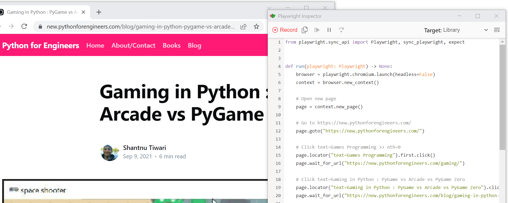

Web Automation: Don't Use Selenium, Use Playwright

For web automation/testing, Selenium has been the de facto "standard" since forever. It's simple to get started with and supports almost every programming language.
My problem with it has been: It's good enough, but nothing more. It doesn't work that well with modern, Javascript framework heavy sites (Angular, React etc). I'm not saying it doesn't work-- just not too well.
Another issue: While Selenium is supposedly "well documented", I found that as soon as you start going off the beaten path, examples are hard to find. Or there are 5 ways of doing something, none of which work very well.
I really struggled with Selenium at a previous company. Selenium just couldn't parse the over-engineered Javascript framework we had, and I had to pile on hacks on hacks.
So much so, I started looking at Javascript testing frameworks like Chai, Mocha, Cypress etc. The problem I found is that they require a completely different setup, and aren't easy to get started for someone from a Python background.
There have been dozens of Selenium alternatives over the years; I tried quite a few. Almost everyone vanished after a few years (or they stopped updating and just abandoned the project). I suppose building a web testing framework is hard for volunteers.
Enter Playwright
I recently heard about Playwright. It looks really good and is built by Microsoft (who have started putting out good open-source tools like Vs Code). The Microsoft part is important, as it's more likely it will be supported over the years.
The killer feature of Playwright is: You can automatically generate tests by opening a web browser and manually running through the steps you want. It saves the hassle I faced with Selenium, where you were opening developer tools and finding the Xpath or similar. Yuck 🤮
Now, to be honest, there were always tools that would do this for you. But they were either a) Not very good b) Commercial and expensive
The best part: Playwright "records" your steps and even gives you a running Python script you can just directly use (or extract parts from). I'm serious about the running part- I can literally record a few steps and I will have a script I can then run with zero changes. The other tools I tried before would give you small snippets of code that would sorta work, but not really, forcing you to jump thru hoops to get it working. Here, you get a ready made working script.

Playwright gives a fairly good implementation that I found works most of the time. It only occasionally missed a step, and in those cases I had to manually add it to the script. But I find Playwright's element discovery easier than Selenium's.
Other benefits: You can record your runs as a video so you can view them later if you find any strange failures. Playwright also creates a detailed trace you can use to sort of "step thru" any failed runs.
Cons? It's still new. That means bugs and not-as-good documentation. I found weird issues (when using the recorder) where I couldn't scroll down to the bottom of the screen in Playwright's Chromium, but could in a normal Chrome, forcing me to use other tricks to click the button. But I don't know if this was a Chromium or Playwright issue.
But overall, for any new project, I'd always choose Playwright over any existing tools.